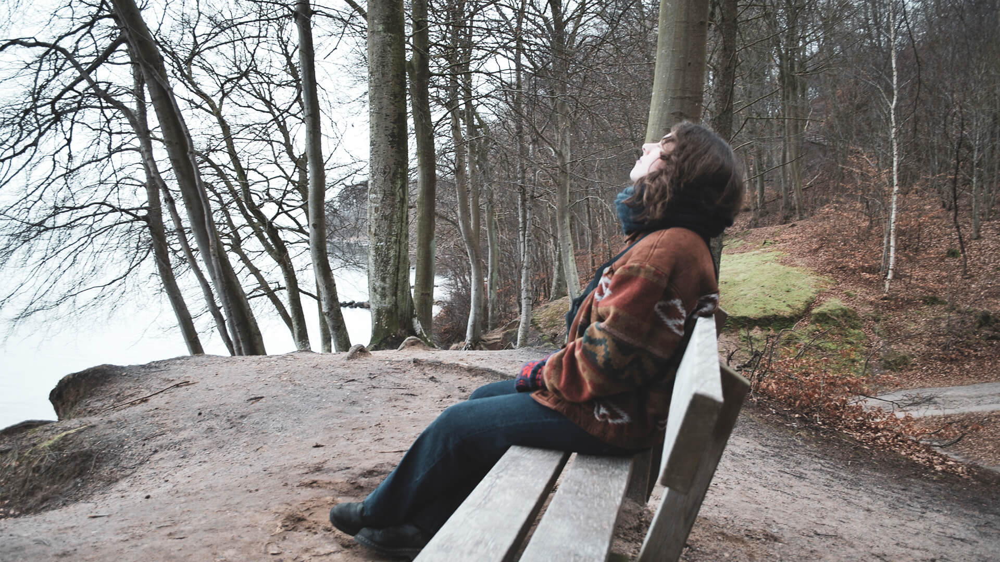
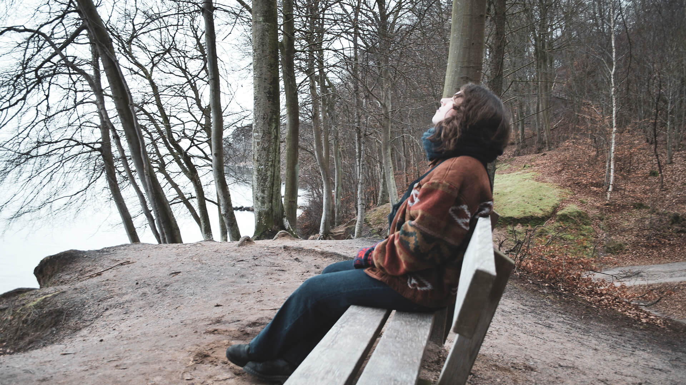

Anne Ingrid
Hvem er Anne?
Kvinden bag vokalen
Anne Ingrid Tangen Kjær, 24 år, fra Norge og er i gang med sin Masters of Music hos det Jyske Musik konservatorium i Aarhus, med speciale inden for komponering og vokal. Udover det er hun i gang med to projekter.Det ene er et band med genren ’’ som går under navnet Kiær og det andet er en duet, med genren ’’.
Noget af det første som inspirerede Anne var Jamie Cullum, som har et mix af Jazz og pop, hvilket er noget hun stræber efter at lave. Hendes interesse for musik har altid været der. Hun begyndte at spille klaver ved 9 års alderen, derefter at synge i kor og så begyndte hun at skrive sange.
 " alt="">
" alt="">